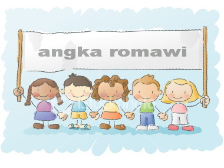
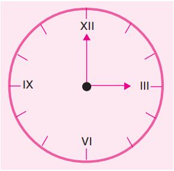
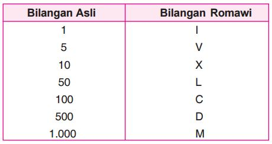
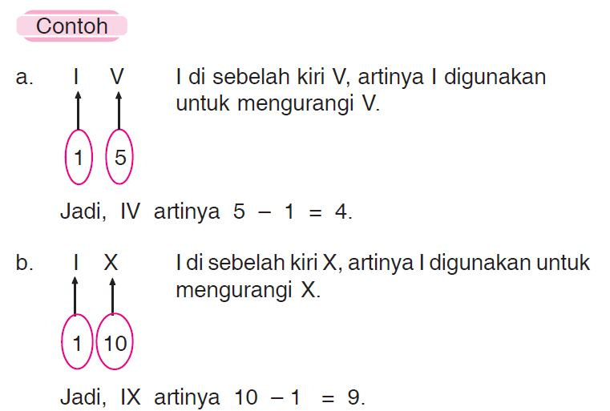

Pada pelajaran sebelumnya, kamu sudah mengenal bilangan asli. Bilangan asli adalah bilangan bulat positif, yaitu 1, 2, 3, 4, 5, .... Pada bab ini kamu akan mempelajari tentang “bilangan Romawi”. Apakah bilangan Romawi itu? Bilangan Romawi kadang digunakan pada jam dinding atau jam tangan. Perhatikanlah jam di bawah ini! Menunjukkan pukul berapakah jam tersebut?

Pertanyaan di atas dapat kamu jawab setelah mempelajari tentang bilangan Romawi. Selain itu, kamu juga akan mengetahui hubungan antara bilangan asli dengan bilangan Romawi. Untuk lebih lengkapnya, mari mempelajari materi berikut ini dengan baik.
Mengenal Lambang Bilangan Romawi
Lambang bilangan Romawi tidak mengenal bilangan nol.
Berikut ini adalah beberapa lambang bilangan Romawi sebagai dasar untuk menuliskan lambang bilangan Romawi yang lain.

Aturan penulisan bilangan Romawi adalah sebagai berikut.
1. Jika angka di sebelah kiri lebih kecil dari angka yang di sebelah kanan, berarti lambang bilangan itu dikurangi.

Dengan cara yang sama pada contoh di atas, maka:
XL artinya 50 – 10 = 40
Jadi, XL = 40.
XC artinya 100 – 10 = 90
Jadi, XC = 90.
2. Jika angka di sebelah kanan kurang dari atau sama dengan angka yang di sebelah kiri, berarti dijumlahkan.
a. XX = 10 + 10 = 20
b. VII = 5 + 1 + 1 = 7
d. LV = 50 + 5 = 55
3. Penulisan lambang bilangan Romawi yang sama hanya
boleh sebanyak tiga kali berturut-turut.
a. III artinya 1 + 1 + 1 = 3
b. CCC artinya 100 + 100 + 100 = 300
c. XXX artinya 10 + 10 + 10 = 30
Perhatikan bahwa 40 tidak boleh ditulis XXXX (empat kali penulisan lambang yang sama secara berurutan).
4. Aturan pengurangan:
a. I hanya dapat digunakan untuk mengurangi V dan X.
b. X hanya dapat digunakan untuk mengurangi L dan C.
c. C hanya dapat digunakan untuk mengurangi D dan M.